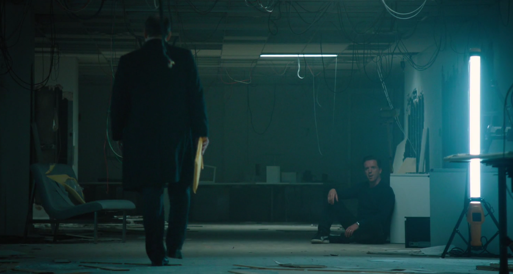

01
01SEASON 01 / 完整十二集
BILLIONS亿万 · 第一季
一场调查，逐渐越过职业与婚姻的边界。
十二集，追踪每一次选择怎样改变下一步。
12单集档案142剧情节点45台词笔记
沿着十二集，读懂这场较量。
三幕剧情、真实配图、分阶段人物关系、消息与选择路径、对照深读和台词卡。场景解读默认展开；单集在新标签页打开。
各篇仅包括截至第一季对应集的剧情。不使用后集解释当前行动。目录完整展示各集配图与导读，导读也涉及对应剧情。请按已观看的集数选择。
01EPISODE 02 / Naming Rights
把名字刻在楼上，能买来归属吗？
豪宅头版引发撤资担忧，阿克斯用合规演习和命名权维护自己的位置。温迪看见被羞辱者的反击风险，查克则发现一个漂亮的大案正在把自己引向岔路。名字、归属与信任，在本集被分别标价。
打开本集图解 ↗ 03
03EPISODE 03 / YumTime
谁可以说不，谁必须先让步？
点心味道变了，阿克斯开始改写 YumTime 董事会。查克换回关键证人，温迪面对患者之间的报复计划，劳拉阻止一本书的危险章节。四条线共同检验一件事：当一个人掌握别人的退路，他会怎样使用它。
打开本集图解 ↗EPISODE 04 / Short Squeeze
他能买下旅程，能真正离开吗？
阿克斯飞往魁北克看 Metallica，空头持仓却被上涨股价与借券召回夹住。查克听见公司的内部结构，也发现父亲制造的危机。朋友、证人和婚姻相继显出边界：财富可以买时间，却不能让所有关系保持原样。
打开本集图解 ↗ 05
05EPISODE 05 / The Good Life
可以停下来，为什么还要回去？
阿克斯清仓，准备带家人登上“美好生活”；公司失去方向，检方找到 Bill 的酒店积分记录。一个人的退出计划，让两套体系同时暴露了对他的依赖，也让查克更难维持公私边界。
打开本集图解 ↗ 06
06EPISODE 06 / The Deal
多少钱，才算认输？
Bill 拒绝合作，客户与家庭开始付出代价。温迪在一场特殊的会谈里重申自己的位置，终于推动双方谈判；19 亿美元的支票摆到桌上，争夺定义胜负的冲动却再次压过了停战。
打开本集图解 ↗ 07
07EPISODE 07 / The Punch
一拳打出去，谁来定义它？
一拳让阿克斯同时成为被追究的人和员工眼里的英雄。完整视频能够补回事实，不能替代家庭教育；查克以公共使命说服 Bryan 留下，温迪则开始计算离开公司会失去什么，又可能获得什么。
打开本集图解 ↗ 08
08EPISODE 08 / Boasts and Rails
一个秘密公开，另一个秘密藏得更深。
被删去的第十章公开了阿克斯的 9·11 交易，公司同时展开寻找告密者的审查。温迪拒绝替审查背书，Bryan 则越过自己的底线；一个人的声誉被真实旧事击穿，另一个人的职位被伪造材料夺走。
打开本集图解 ↗ 09
09EPISODE 09 / Where the F*ck Is Donnie?
找到证人，仍然抓不住局面。
9·11 获利报道引出抗议、撤资与家庭压力。唐尼突然失踪，让阿克斯和查克同时失去把握；温迪坚持保密，却从两个电话里的碎片发现丈夫的隐瞒。
打开本集图解 ↗ 10
10EPISODE 10 / Quality of Life
谁有权决定，最后几个月的价值？
唐尼之死让案件转移，插叙揭出他为家人接受的四千万安排。假争执、法官告别会与葬礼相互穿插；末尾一个未被告诉患者的医疗选项，改变了我们对胜利的理解。
打开本集图解 ↗ 11
11EPISODE 11 / Magical Thinking
修好赚钱的能力，先拆开自己的面具。
Biolance 的失误迫使阿克斯向温迪求助。一场深夜会谈触及唐尼、照顾员工和自我形象；查克看见两人谈笑后，越过了婚姻与职业共有的保密边界。
打开本集图解 ↗
12EPISODE 12 / The Conversation
两个人都失去了她，却仍坚持下一回合。
保密会谈的内容引出新案，阿克斯却误把温迪当成泄密者。她向丈夫要责任、向老板要离开的自由；一条假监听消息让公司成了废墟，两位对手在其中继续争论。
打开本集图解 ↗